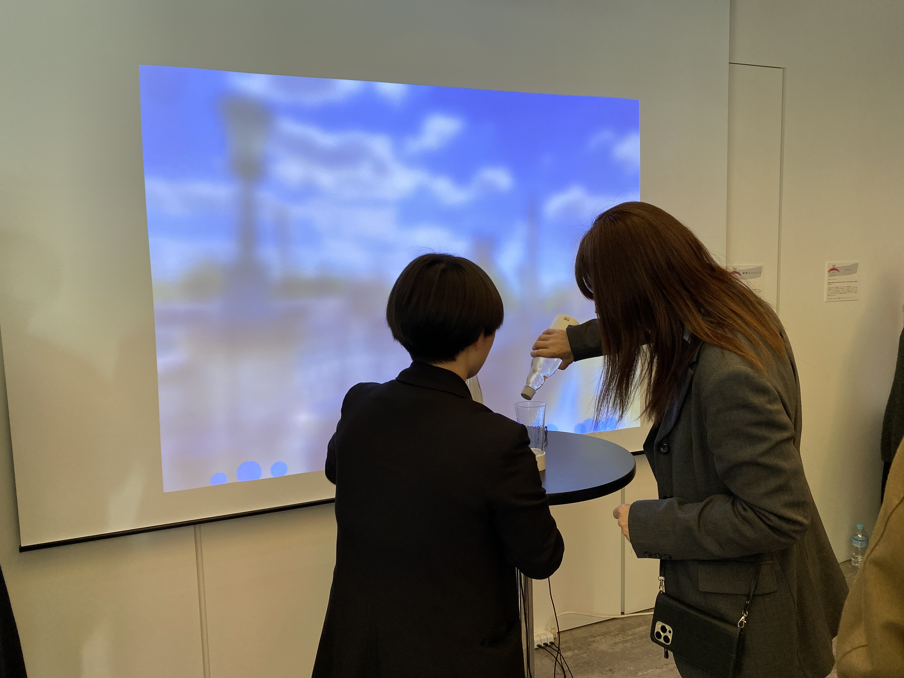
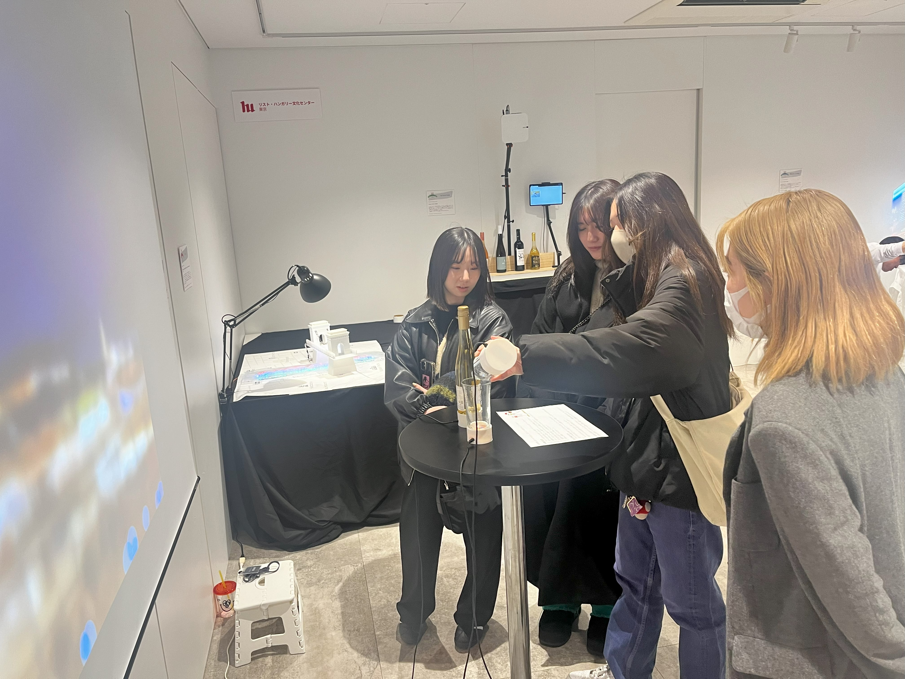
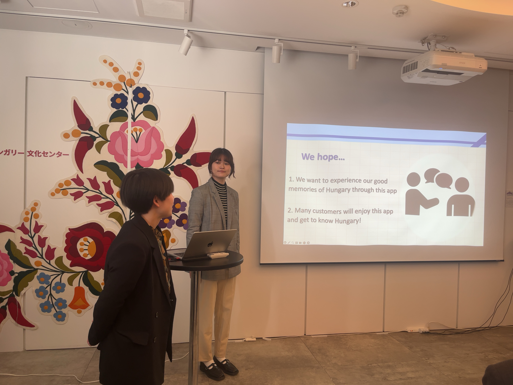
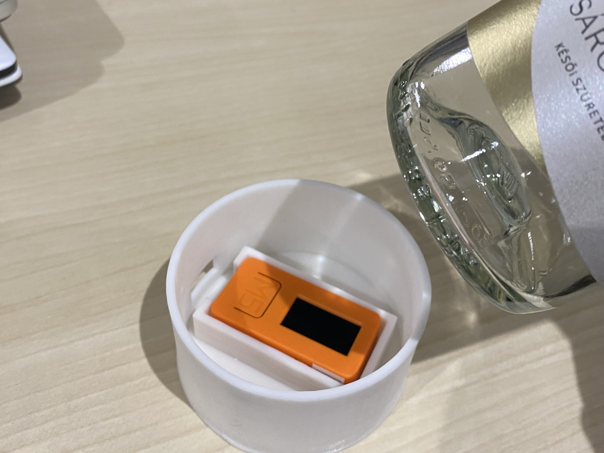

夏のハンガリーでよく飲まれる"Fröccs（フルッチュ）"をモチーフとした作品．




Processing,Arduino,M5stickC
夏のハンガリーでよく飲まれる"Fröccs（フルッチュ）"の疑似体験ができる作品です。 ワインを傾けてグラスに注ぐようにしてから、グラスを持ち、飲む動作をします。すると画面がぼやけて酔うような体験を得られます。 ワインだけでなく、そこに炭酸を注ぐと酔いが緩和されます。 ワインをたくさん飲むと眠くなってしまい画面がブラックアウトしてしまいます。 それぞれの動作には関連した音が流れて実際の体験に近いことを体験していただくことができます。 "Fröccs（フルッチュ）"を飲み、ハンガリーの美しい外の景色を見たという私たちが経験したことを体験していただけると思います。
この作品は麻布十番に所在しているハンガリー文化センターでの展示のために三年生後期に作った作品です。 実際にハンガリーに行ったメンバーが現地で撮影・録音、体験したことなどをもとに、ハンガリーの魅力を伝えるために作りました。
ワイン、炭酸、グラスのそれぞれの底にM5StickCをつけて傾きをとり、 傾いているかどうかをProcessingに送ります。ワインを傾けるとブラーが強くなり、炭酸を傾けるとブラーが弱くなります。 グラスを傾けたときにProcessingスケッチにブラーが反映されます。M5StickCにはESP32が内臓されているのでbluetooth通信 で傾きを検知することが可能です。